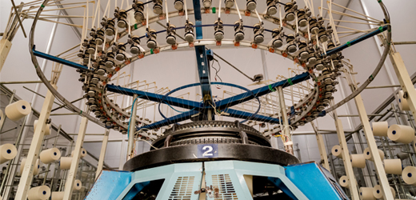
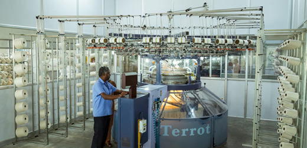
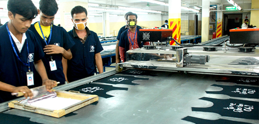
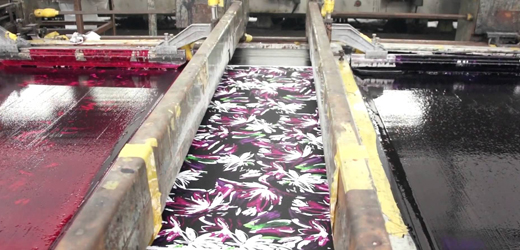
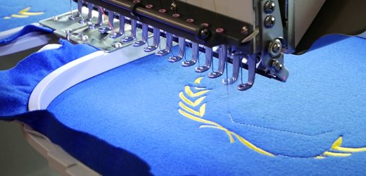
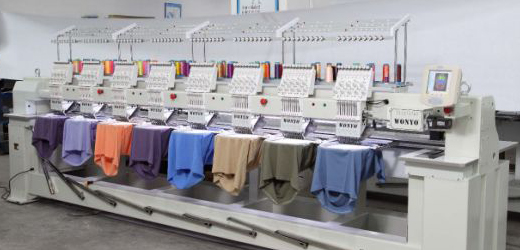
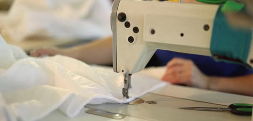
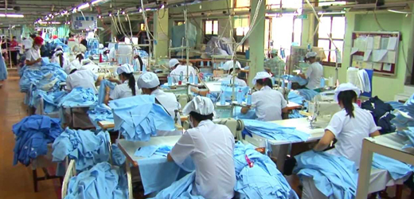

INFRASTRUCTURE
Samsaro Exports has an excellent garment production unit which is well designed with ample workspace, adequate natural lighting and extensive ventilations. Samsaro Exports in-house garment production facility is well equipped with latest state of the art machinery in fabric cutting, fusing, sewing, finishing & packing, resulting in better quality & higher efficiency in productivity. Every style is time & method engineered to improve productivity & achieve delivery deadlines.
KNITTING
The Samsaro Exports has Own Knitting machines, which is Mayor & Cie, Germany. It can produce around 2000 KGS of fabric per day. We can do all types of knitted fabrics as per our customer specification and style, which includes Single Jersey, Interlock, French Terry and all types of Ribs, Jackquard designs,Loop Knit, Fleece, Blended, Auto stripes.
 PRINTING
Our proficiency lies in making a wide range of printing patterns possible. Towards this, we have table & machine printing facility that enable a diverse variety of prints.
Pigment print, Plastisol print, Discharge print, Glitter Print, Flock print, Foam print, Digital Transfer print, High Density print , etc..,
 EMBROIDERY
The highly advanced Tajima machine with 20 heads makes it easy for us to craft the finest embroidery designs.
The embroidery division is equipped with the latest machines from TAJIMA-(Japan Make).These automated embroidery machines elegantly handle any design with Punching ,Designing & Applique Cutting.
 GARMENTING
The garments are manufactured in most sophisticated machines using the latest state of the art technology in our INHOUSED PRODUCTION UNIT. Our wide range of machineries include JUKI, BROTHER, PEGASUS. Our Production is the key for success which keeps us growing in this competitive industry. Our production unit is supported by 100 sewing machines.
 PACKING
They are packed neatly in the designated packs and placed inside the carton or hanger racks for dispatch.